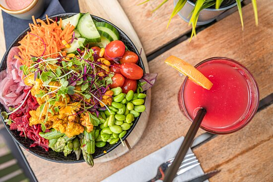

Op zaterdag en zondag serveren wij een heerlijk ontbijt.
Kun jij ook zo moeilijk kiezen? Met ons luxe ontbijt hoeft dat
niet en krijg je allerlei lekkers! Croissantjes, huisgemaakte granola,
pancakes en nog veel meer! Dat onder het genot van een vers kopje koffie
of thee van Blanche Dael. Zie jij jezelf al genieten?
Voor de Kids tot 12 jaar serveren we een speciaal kidsontbijt.
Verzekerd zijn van een plekje? Reserveer dan alvast een tafeltje
voor komend weekend. Gewoon even binnenlopen kan natuurlijk ook!
Ga jij voor onze hardloper biefstuk deluxe? Of kies je
liever een healthy lunchcombi? Als dessert een heerlijk
stukje huisgemaakte cheesecake? Loopt het water jou ook
in je mond bij het horen van deze lekkere gerechten?
Reserveer dan alvast een tafeltje.
Voor de kinderen
hebben we een aparte kidskaart, mét kleurplaat!
- diner -

Neem plaats in ons gezellige restaurant of op ons mooie (en verwarmde)
terras voor het diner en laat je door ons team in de watten leggen.
Maak een keuze uit heerlijke gerechten en geniet! Vergeet ook niet een lekker
drankje te bestellen. Wat denk je van een luxe cocktail? Een zachte witte wijn?
Of een speciaalbiertje van de tap? Een échte aanrader is het menu van de chef
met als dessert onze beroemde bokkepootjesijstaart!
Natuurlijk heeft onze chef
ook aan de kleintjes gedacht. We hebben een speciale kidskaart met de
allerlekkerste gerechten en daarbij een toffe kleurplaat.
{kind=link}